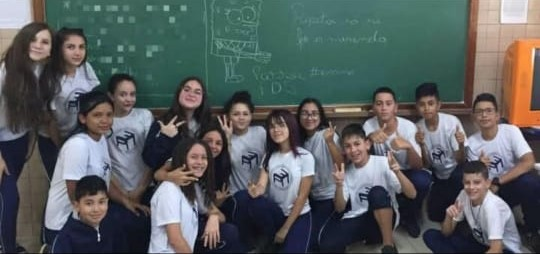

Eu e minha turma no 4°Ano, no passeio da vila dos animais
Data: 17/06/2016

Surpresa de aniversário para a professora Jacqueline
Data: 25/10/2017

Dia em que conheci meus primeiros amigos do Morelli
Data: 12/05/2019
Dia que fizemos cartinha ecompramos chocolate para as tias da limpeza
Data: 22/11/2023
Eu e minhas amigas tirando foto com a Beca da formatura
Data: 19/09/2024
Eu e meus amigos no churrasco da formatura
Data: 29/09/2024